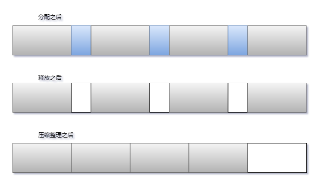
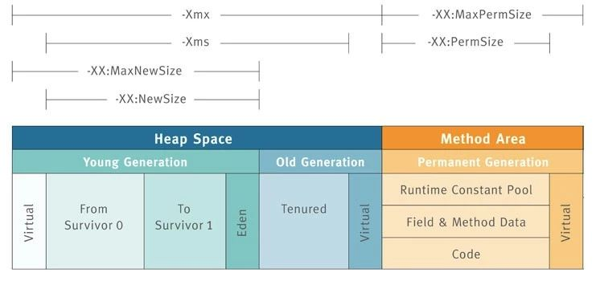

对于程序员而言,Java最诱人的特性之一是不需要显式地管理对象的生命周期,我们可以在需要对象的时候创建对象,对象不再使用的时候由JVM在后台自动进行垃圾回收.
什么是垃圾收集
当然目前这个特性似乎很多人无法体会它的优点,举个C语言来手动管理内存的一个示例程序
int send_request() {
size_t n = read_size();
int *elements = malloc(n * sizeof(int));
if(read_elements(n, elements) < n) {
// elements not freed!
return -1;
}
// …
free(elements)
return 0;
}
malloc函数分配内存,free释放内存,可以看到,如果程序很长,或者结构比较复杂,很可能就会忘记释放内存.内存泄漏曾经是个非常普遍的问题,而且只能通过修复代码来解决.因此,业界迫切希望有一种更好的办法,来自动回收不再使用的内存,完全消除可能的人为错误。这种自动机制被称为 垃圾收集(Garbage Collection,简称GC)
简单来说,垃圾收集由几个步构成:查找不再使用的对象,释放这些对象所管理的内存,对堆内存布局进行压缩整理.

- 小图一 假设我们分配了4个 900 bytes 的数组和3个 300 bytes 的数组
- 小图二 如果300bytes的数组不再使用则会被回收,释放其内存.
- 小图三 释放内存以后对堆进行压缩整理,腾出连续的内存空间
如果垃圾回收到小图二的状态就结束的话,内存结构就是1000 bytes数组中间夹杂着300 bytes的空闲空间.那么下次创建对象需要分配内存的时候如果超过300bytes,刚刚释放出来的空间是无法被使用的.因为JVM创建对象分配内存是需要连续的内存空间.
所以垃圾回收的过程中,释放内存以后要堆进行压缩整理.在操作的过程中,对象的内存地址会发生变化,因此这个过程中任何线程都不能再访问该对象.所有应用线程停止运行所产生的停顿被称为时空停顿(stop-the-world).
分代垃圾回收
基于时空停顿的现状和弱分代假设,Java的垃圾回收采用分代设计,将VM分成几个物理区域.我们回顾下上一篇的其中一个图.

年轻代
年轻代进一步分为Eden 和一对Survivor,对象首先在Eden区进行分配,可能你会想堆内存基本上都是从小端地址往上分配.Eden区就一个,在面对多线程高并发情况下分配内存空间不是效率很低.事实上为了让Eden区更快地分配内存,,每个线程都有一个固定的分区用于分配对象,叫Thread Local Allocation Buffer,直译是线程本地分配缓冲区.后续我们会专门介绍这个缓冲区.
年轻代最主要的作用就是快速分配对象,快速回收对象.
当Eden的大小被用完的时候,就会产生一次GC,年轻代的GC我们称为Young GC 或者Minor GC.此时Eden,和使用中的一个Survivor会被清空,不能被回收的对象会被放到未被使用的Survivor.如果Survivor中的对象满足一定的阈值也就是经历了Young GC次数,我们称之为代数.就会被晋升到老年代.
具体的提升阈值由JVM动态调整,但也可以用参数-XX:+MaxTenuringThreshold来指定上限.如果设置-XX:+MaxTenuringThreshold=0,则GC时存活对象不在存活区之间复制,直接提升到老年代.现代JVM中这个阈值默认设置为15个 GC周期.
年老代
年老代,是堆内存 比较大的一块区域.对象都是经过多次Young GC晋升上来的.当对象不断被移动到年老代,最终年老代也会被填满,JVM需要找出年老代中不再使用的对象,并对他们进行回收.老年代空间的清理算法通常是建立在不同算法的基础上的.原则上,会执行以下这些步骤:
通过标志位(marked bit),标记所有通过 GC roots 可达的对象.
删除所有不可达对象
整理老年代空间中的内容，方法是将所有的存活对象复制,从老年代空间开始的地方,依次存放。

分代垃圾收集,就是不断清除各个分代不使用的对象,然后把存活的对象复制到他们代数应该存在内存区域里面.
两种GC都会造成时空停顿,只不过是年轻代的内存区域比较小,对象相互引用一般也是比较简单.所以回收比较快.而年老代是一块比较大的内存区域.发生Full GC会造成较长的时空停顿现象.
例如一个请求需要50ms返回,业务处理平均处理时间是30ms,Young GC平均时间是10ms,Full GC的平均时间是40ms的话.应用程序必然经常有着不合理的性能抖动.
那么问题来了,我们应该如果操作呢? 这要根据应用的特性对堆空间各个分块大小的调整和分代收集器的各个分代垃圾回收算法的选择.